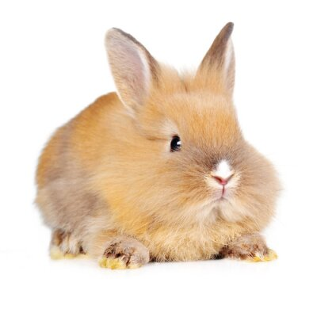

Uszy służą nie tylko do nasłuchiwania, czy nie zbliża się drapieżnik. Królicze uszy pomagają oddawać ciepło z organizmu. Nie są one gęsto owłosione, za to są mocno ukrwione, dlatego dzięki nim ciało królika łatwo reguluje temperaturę w przypadku gorąca. Ciepłe uszy u królika oznaczają, że zwierzakowi jest gorąco. Jeśli są gorące i długo się to utrzymuje, pupil może mieć gorączkę.